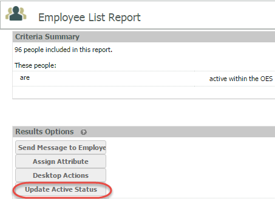
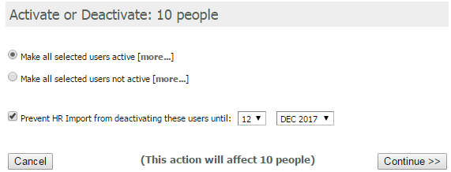

The "Active" or "Not Active" status and Active Status Override may be assigned to an individual user through the HR Profile or applied in bulk through a Employee List Report.
Active Status Override (Prevent HR Import from deactivating this user)
Depending on your data import cycle, accounts added manually (such as contractors) will change to "Not Active" after specified number of days from the time of the last data import. If you select the option to Prevent HR Import from deactivating this user and select an expiration date, the user will remain "Active" in the OES system until the expiration date passes. Once the expiration date passes, the user's account will become "Not Active" upon the next data import, at which time the user will no longer be able to log in to OES. Therefore, if you have contractors who are still working for the company, it is important to renew the Active Status Override prior to the expiration date.
DO NOT assign the Active Status Override to users who have been added to the system via the HR feed. Doing so will prevent the users from becoming "Not Active" if they leave the company prior to the Active Status Override expiration date.
The default expiration date will be today's date. YOU MUST CHANGE THE DATE. It is best practice to use December 31 of the following year, so that end of year reports can be used to easily identify contractors who will need their expiration date renewed.
Once assigned, you will see the user's Active Status Override expiration date in the Employee Summary. If the user does not have the Active Status Override assigned, the user will show as "Active" without an expiration date.
To assign Active/Not Active status and/or Active Status Override in bulk:
Run an Employee List Report.
From the report, select the users you wish to activate, deactivate, or assign the Active Status Override.
DO NOT assign the Active Status Override to Employees added by the HR feed. Doing so will prevent these users from becoming "Not Active" if they leave the company prior to the Active Status Override expiration date.
Select "Update Active Status".

The expiration date will default to today's date. YOU MUST CHANGE THE DATE. It is best practice to use December 31 of the following year.
Select the desired action(s). Double check that the number of users is correct, then click "Continue".

You will receive a confirmation that the change has been made.